BADAN PENGENDALIAN DAN PENGUJIAN MUTU HASIL KELAUTAN DAN PERIKANAN
Sistem Digital Inventarisasi Aset Negara
BUKU PANDUAN PENGGUNAAN
SISTEM DIGITAL INVENTARISASI ASET NEGARA (SESDIAN)
Panduan bagi Pengguna Umum, Pegawai, Verifikator, dan Administrator
Dapat diakses melalui https://sesdian.vercel.app
Bab I Gambaran Umum Sistem
SESDIAN, kependekan dari Sistem Digital Inventarisasi Aset Negara, merupakan aplikasi berbasis web yang dibangun untuk menata pencatatan dan peminjaman barang milik kantor di lingkungan instansi. Aplikasi ini menggantikan pencatatan yang sebelumnya dikerjakan secara manual di atas kertas dengan sebuah sistem yang menyimpan seluruh data barang beserta riwayat pemakaiannya dalam satu tempat, sehingga jumlah, lokasi, kondisi, maupun status setiap barang dapat diketahui sewaktu-waktu tanpa harus membuka arsip fisik.
Persoalan yang ingin dijawab cukup jelas. Pada pengelolaan yang masih mengandalkan formulir kertas, permohonan pinjam pakai barang sering tertahan di meja, catatan ketersediaan mudah tertinggal dari keadaan sebenarnya, dan rekapitulasi untuk laporan harus disusun ulang setiap kali dibutuhkan. Dengan memindahkan seluruh proses tersebut ke dalam aplikasi, pegawai dapat mengajukan peminjaman dari perangkatnya masing-masing, petugas dapat menyetujui langsung dari layar, dan angka stok ikut menyesuaikan begitu barang berpindah tangan.
Ada beberapa hal pokok yang ditawarkan sistem ini. Peminjaman barang diajukan secara daring tanpa perlu mengisi kertas, sementara ketersediaan setiap barang ditampilkan apa adanya agar tidak terjadi rebutan pemakaian. Setiap permohonan melewati dua kali pemeriksaan, yakni oleh administrator terlebih dahulu lalu oleh verifikator, sebelum barang benar-benar boleh digunakan. Di samping itu, sistem menyiapkan pemberitahuan melalui WhatsApp pada tahap-tahap penting, menyediakan laporan yang dapat diunduh dalam bentuk berkas Excel maupun dicetak sebagai PDF, dan membuka sebagian data barang kepada masyarakat umum melalui katalog terbuka serta kode QR yang ditempel pada barang dan ruangan.
Aplikasi dijalankan sepenuhnya melalui peramban web, baik dari komputer maupun telepon genggam, dan dapat dibuka pada alamat https://sesdian.vercel.app. Karena berjalan di peramban, tidak ada perangkat lunak tambahan yang perlu dipasang; pengguna cukup mengetikkan alamat tersebut pada Google Chrome, Mozilla Firefox, Microsoft Edge, atau Safari. Bagian-bagian berikut menjelaskan cara memakainya, dimulai dari hal yang dapat dilakukan tanpa masuk akun, kemudian diperinci menurut peran masing-masing pengguna.
Bab II Hak Akses dan Cara Masuk
Sistem membedakan penggunanya ke dalam empat kelompok yang memiliki kewenangan berbeda. Kelompok pertama adalah pengguna umum atau publik, yang tidak perlu masuk akun dan hanya dapat melihat data barang. Kelompok kedua adalah pegawai, yang setelah masuk dapat menelusuri barang, mengajukan peminjaman, serta mengembalikannya. Kelompok ketiga adalah verifikator, yang bertugas memeriksa kembali peminjaman yang sudah disetujui administrator. Kelompok keempat adalah administrator, yang memegang kendali atas data barang, ruangan, kategori, pengguna, persetujuan peminjaman, dan penyusunan laporan. Ketiga kelompok yang terakhir masuk melalui halaman yang sama dan dibedakan oleh peran yang melekat pada akunnya, bukan oleh halaman masuk yang berbeda.
Hal yang membedakan SESDIAN dari kebanyakan aplikasi serupa terletak pada cara akun dibuat. Tidak ada pendaftaran mandiri. Seorang administrator mendaftarkan akun baru cukup dengan mengisi Nomor Induk Pegawai sepanjang delapan belas angka, tanpa menetapkan nama maupun kata sandi. Nama dan kata sandi justru diatur sendiri oleh pemilik NIP ketika ia masuk untuk pertama kali. Dengan begitu, kata sandi tidak pernah diketahui oleh pihak lain, termasuk administrator yang mendaftarkannya.
Proses masuk berlangsung bertahap. Pengguna mula-mula mengetikkan NIP-nya dan menekan tombol Lanjutkan. Apabila NIP tersebut sudah terdaftar tetapi belum pernah diberi kata sandi, tampilan berpindah ke halaman Aktifkan Akun, tempat pengguna mengisi nama lengkap dan membuat kata sandi minimal delapan karakter yang diketik ulang untuk memastikan tidak ada salah ketik. Setelah disimpan, akun langsung aktif dan pengguna dibawa ke halaman beranda tanpa perlu masuk ulang. Bila NIP sudah memiliki kata sandi, yang muncul adalah kolom kata sandi biasa. Halaman masuk juga memuat keterangan singkat yang mengingatkan pengguna baru untuk memasukkan NIP terlebih dahulu, sebagaimana terlihat pada Gambar 1, dan langkah pengaktifan akun ditunjukkan pada Gambar 2.
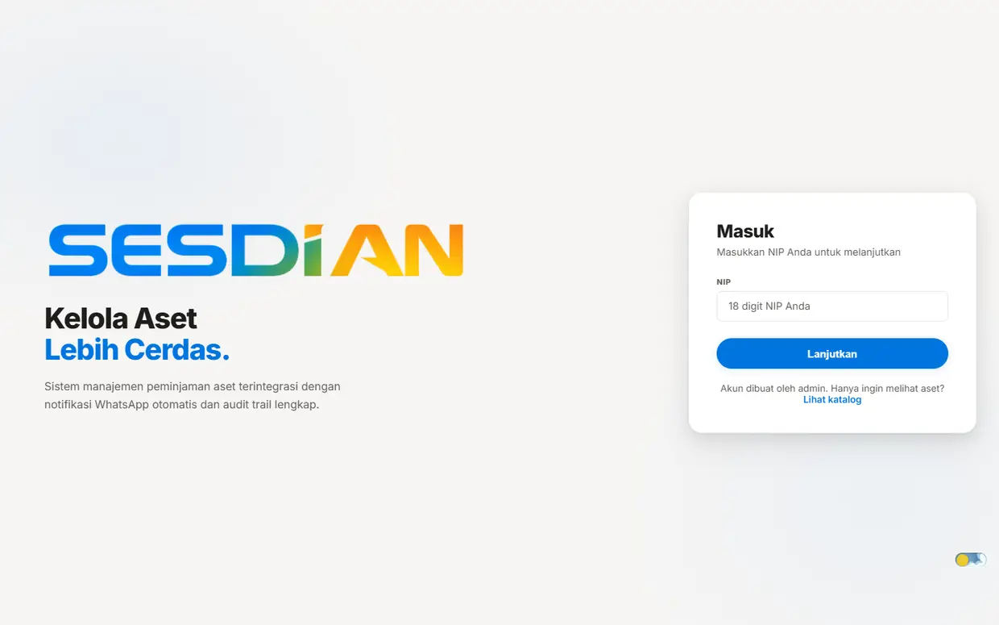
Gambar 1. Halaman masuk yang meminta NIP terlebih dahulu
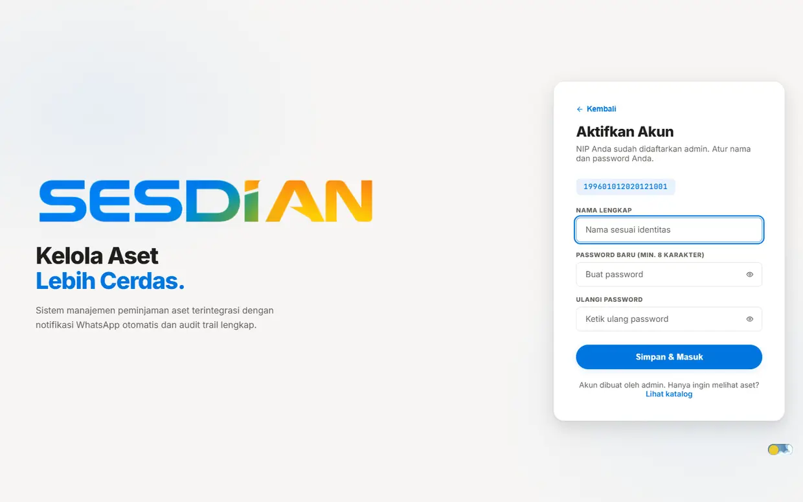
Gambar 2. Halaman pengaktifan akun bagi NIP yang belum memiliki kata sandi
Sesi yang terbentuk setelah masuk berlaku selama tujuh hari pada perangkat yang sama, sehingga pengguna tidak perlu memasukkan NIP dan kata sandi setiap kali membuka aplikasi. Sesi berakhir ketika masa itu habis atau ketika pengguna menekan tombol Keluar. Apabila seorang pegawai lupa kata sandinya, penyelesaiannya ditempuh melalui administrator, yang dapat menghapus akun lama lalu mendaftarkan ulang NIP yang sama agar pemiliknya kembali melewati proses pengaktifan dan menetapkan kata sandi yang baru.
Bab III Penggunaan bagi Pengguna Umum
Bagian ini ditujukan bagi siapa saja yang ingin melihat data barang tanpa memiliki akun, termasuk tamu, pengawas dari luar, maupun pegawai yang akunnya belum aktif. Titik masuk yang paling mudah adalah halaman katalog pada alamat https://sesdian.vercel.app/katalog, yang juga dapat dicapai melalui tautan Lihat katalog di halaman masuk. Halaman ini menyajikan ringkasan angka di bagian atas berupa jumlah seluruh barang, total stok, stok yang tersedia, stok yang sedang dipinjam, dan jumlah pengajuan yang masih menunggu, diikuti kolom pencarian serta sederet tombol kategori untuk menyaring tampilan. Di bawahnya, barang ditampilkan dalam bentuk kartu yang memuat foto, penanda BMN atau Non-BMN, jumlah unit, nama barang, mereknya, serta kategori dan ruangannya. Tampilan katalog dengan data sebenarnya dapat dilihat pada Gambar 3.
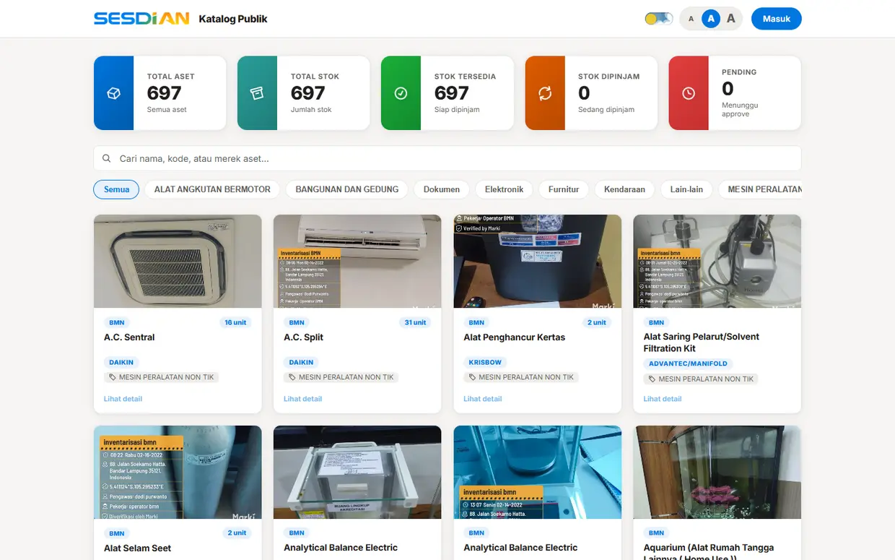
Gambar 3. Halaman katalog yang dapat dibuka tanpa masuk akun
Barang yang serupa, yakni yang memiliki nama dan merek sama, digabungkan menjadi satu kartu agar daftar tidak menjadi terlalu panjang, sedangkan jumlah unit yang tergabung tetap tertera pada kartunya. Ketika salah satu foto pada kartu diklik, gambar barang terbuka dalam ukuran besar dan dapat ditutup kembali dengan menekan di mana saja atau menekan tombol Esc. Bila yang diklik adalah bagian kartu selain foto, aplikasi membuka halaman rincian barang yang memuat kode, nama, merek, kategori, ruangan, tahun, kondisi, jenis, dan tipe barang seperti tampak pada Gambar 4. Pada halaman rincian ini, jumlah stok maupun tombol untuk meminjam baru muncul setelah pengguna masuk akun, sehingga pengunjung umum yang menekan tombol pinjam akan diarahkan ke halaman masuk.
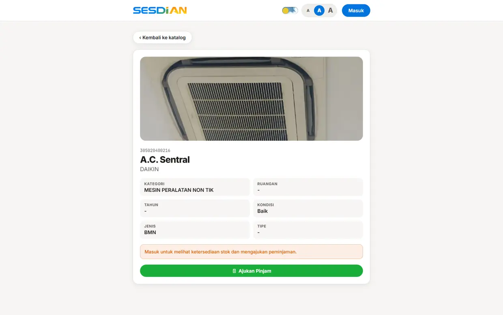
Gambar 4. Halaman rincian barang untuk pengguna umum
Selain penelusuran melalui katalog, rincian barang juga dapat dibuka dengan memindai kode QR yang ditempel pada barang. Pengguna cukup mengarahkan kamera telepon ke stiker QR dari jarak sekitar sepuluh hingga lima belas sentimeter, lalu menekan tautan yang muncul, dan halaman rincian barang tersebut langsung terbuka. Cara serupa berlaku untuk kode QR yang dipasang di dekat pintu ruangan; memindainya menampilkan daftar barang yang tercatat berada di ruangan itu, lengkap dengan kondisi dan jumlah stoknya. Sebagai pelengkap, pada pojok kanan atas setiap halaman tersedia tombol untuk mengganti tampilan menjadi terang atau gelap serta tombol pengatur ukuran tulisan, dan kedua pilihan itu tersimpan pada perangkat sehingga tetap berlaku ketika pengguna berpindah halaman.
Bab IV Penggunaan bagi Pegawai
Setelah akunnya aktif dan berhasil masuk, seorang pegawai disambut oleh halaman beranda yang menyajikan sapaan sesuai waktu, lima kotak ringkasan berisi total aset, total stok, stok tersedia, stok dipinjam, dan jumlah pengajuan yang menunggu, serta sebuah tabel peminjaman terbaru yang dilengkapi kolom pencarian dan penyaring status. Tampilan beranda ini, sebagaimana terlihat pada Gambar 5, memberi gambaran cepat mengenai keadaan barang tanpa perlu membuka menu satu per satu.
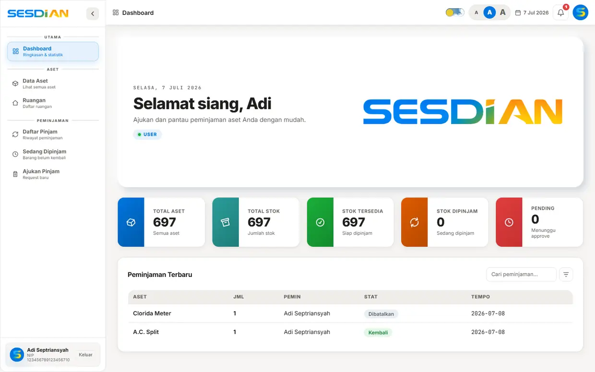
Gambar 5. Halaman beranda bagi pegawai
Untuk menelusuri barang, pegawai membuka menu Data Aset pada bilah sisi kiri. Sama seperti di katalog, unit yang bernama dan bermerek sama dikelompokkan menjadi satu kartu, dengan merek ditampilkan sebagai label tersendiri di bawah nama agar barang yang namanya kebetulan sama tetap mudah dibedakan. Setiap kartu memuat foto, penanda jenis, jumlah yang tersedia, kode atau jumlah unit, kondisi, serta bilah kecil yang menggambarkan perbandingan stok tersedia terhadap total. Pencarian menurut nama atau kode, penyaring BMN dan Non-BMN, serta penyaring status tersedia untuk mempersempit tampilan. Keseluruhan halaman Data Aset dengan data nyata diperlihatkan pada Gambar 6.
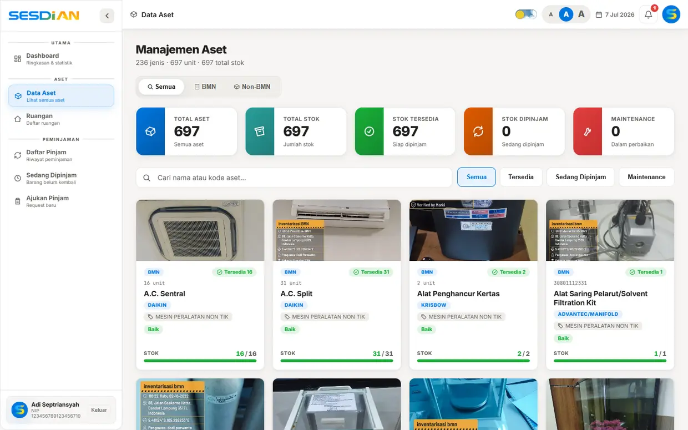
Gambar 6. Halaman Data Aset pada tampilan pegawai
Ketika sebuah kartu dibuka, muncul jendela rincian jenis yang menampilkan ringkasan jumlah total, tersedia, dan dipinjam, foto barang yang dapat diperbesar, serta daftar seluruh unit fisik beserta kode dan kondisinya. Dari jendela inilah peminjaman dimulai: pegawai mencentang unit yang tersedia, mengisi tanggal rencana pengembalian yang wajib diisi, lalu menekan Ajukan Pinjam. Jendela rincian jenis tersebut ditunjukkan pada Gambar 7.
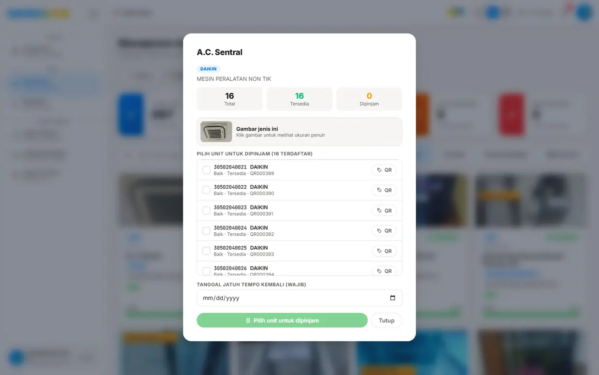
Gambar 7. Jendela rincian jenis barang beserta daftar unitnya
Selain melalui jendela tersebut, tersedia pula halaman khusus Ajukan Pinjam yang dapat dibuka dari menu. Di halaman ini pegawai memilih satu atau beberapa unit sekaligus dalam satu pengajuan, menentukan tanggal pengembalian, dan mengirimkannya. Begitu pengajuan terkirim, statusnya menjadi Pending dan menunggu diperiksa administrator, sementara aplikasi menyiapkan pesan WhatsApp berisi rincian pengajuan untuk administrator, yang dapat terkirim secara otomatis atau terbuka sebagai pesan siap kirim. Halaman Ajukan Pinjam diperlihatkan pada Gambar 8.
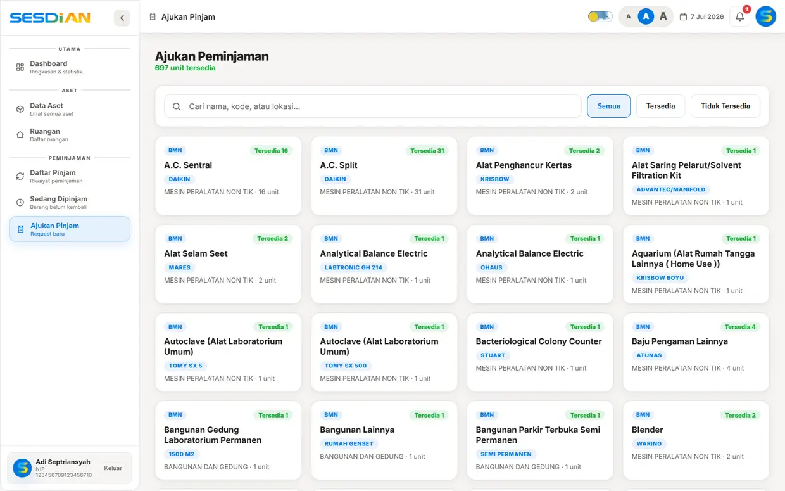
Gambar 8. Halaman pengajuan peminjaman
Perjalanan sebuah pengajuan dapat dipantau melalui menu Daftar Pinjam, yang memuat seluruh riwayat permohonan milik pegawai bersangkutan beserta penyaring cepat menurut status. Status yang mungkin muncul mengikuti alur pemeriksaan yang berlaku. Sebuah pengajuan mula-mula berstatus Pending selagi menunggu administrator, berubah menjadi Disetujui Admin setelah lolos pemeriksaan pertama, kemudian Terverifikasi ketika verifikator menyetujuinya, dan Dipinjam saat barang berada di tangan peminjam. Ketika barang hendak dikembalikan, statusnya menjadi Menunggu Verifikasi Kembali, dan berakhir sebagai Kembali setelah pengembalian diperiksa. Permohonan yang tidak disetujui akan berstatus Ditolak, sedangkan permohonan yang dibatalkan sendiri oleh pemohon berstatus Dibatalkan. Tampilan Daftar Pinjam dengan sejumlah transaksi nyata dapat dilihat pada Gambar 9.
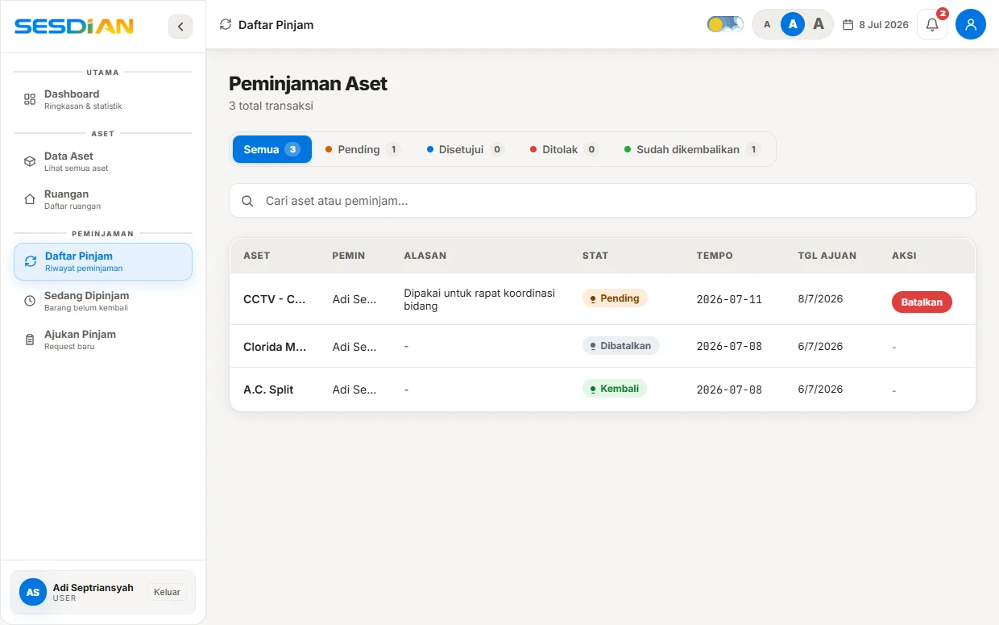
Gambar 9. Halaman Daftar Pinjam beserta penyaring status
Selama sebuah pengajuan masih berstatus Pending, pemohon berhak membatalkannya sendiri melalui tombol Batalkan pada barisnya di Daftar Pinjam tanpa harus meminta bantuan administrator. Setelah dikonfirmasi, status berubah menjadi Dibatalkan dan stok yang sempat dikunci untuk pengajuan itu langsung dikembalikan. Namun begitu pengajuan sudah disetujui administrator, pembatalan mandiri tidak lagi tersedia.
Barang yang sedang dipegang pegawai dikelola melalui menu Sedang Dipinjam. Untuk memulai proses pengembalian, pegawai menekan tombol Konfirmasi Pengembalian pada barang yang bersangkutan sehingga statusnya berpindah menjadi Menunggu Verifikasi Kembali, kemudian menyerahkan barang secara fisik kepada petugas yang akan menekan tombol Verifikasi Dikembalikan. Sesudah itu status menjadi Kembali dan stok pulih dengan sendirinya. Halaman Sedang Dipinjam diperlihatkan pada Gambar 10.
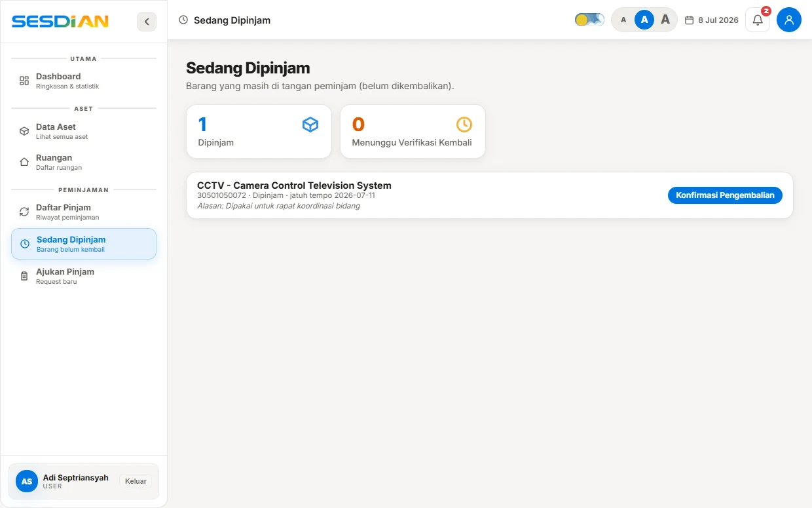
Gambar 10. Halaman Sedang Dipinjam
Sepanjang proses tersebut, pegawai memperoleh dua jalur pemberitahuan. Ikon lonceng di pojok kanan atas menampilkan kabar terbaru yang relevan, seperti pengajuan yang disetujui, ditolak, atau telah dikembalikan, beserta jumlah yang belum dibaca. Di samping itu, pesan WhatsApp dikirim pada tahap-tahap penting, baik ketika administrator mengambil keputusan maupun ketika permintaan pengembalian diajukan. Terakhir, melalui menu Detail Profil pegawai dapat memperbarui foto profil yang otomatis dipotong menjadi persegi, menyunting data akun, dan mengganti kata sandinya secara berkala. Halaman profil ditunjukkan pada Gambar 11.
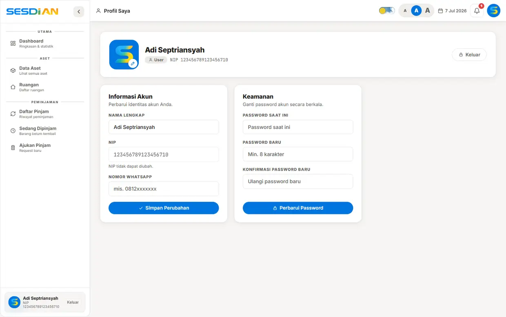
Gambar 11. Halaman Detail Profil
Bab V Penggunaan bagi Verifikator
Verifikator menempati posisi sebagai pemeriksa lapis kedua. Sebuah peminjaman yang telah disetujui administrator belum boleh langsung digunakan sebelum verifikator memeriksanya kembali, sehingga setiap transaksi melewati dua tahap penilaian yang saling melengkapi. Pemisahan tugas ini dimaksudkan agar keputusan tidak bertumpu pada satu orang dan agar catatan peminjaman lebih dapat dipertanggungjawabkan.
Pekerjaan verifikator terpusat pada menu Verifikasi. Antrean yang ditampilkan berisi pengajuan yang sudah berstatus Disetujui Admin dan menunggu pemeriksaan kedua, serta permintaan pengembalian yang berstatus Menunggu Verifikasi Kembali. Setiap baris memuat foto dan nama peminjam, barang yang diminta, tanggal, dan status. Verifikator menyetujui sebuah pengajuan sehingga menjadi Terverifikasi, atau menolaknya, dan setiap tindakan selalu meminta konfirmasi ulang untuk mencegah kekeliruan menekan tombol. Untuk pengembalian, tombol Verifikasi Dikembalikan menutup transaksi sekaligus memulihkan stok. Di samping tabel antrean terdapat sebuah grafik lingkaran yang meringkas sebaran status seluruh peminjaman, seperti terlihat pada Gambar 12, yang pada data contoh menunjukkan dua peminjaman yang keduanya telah dikembalikan.
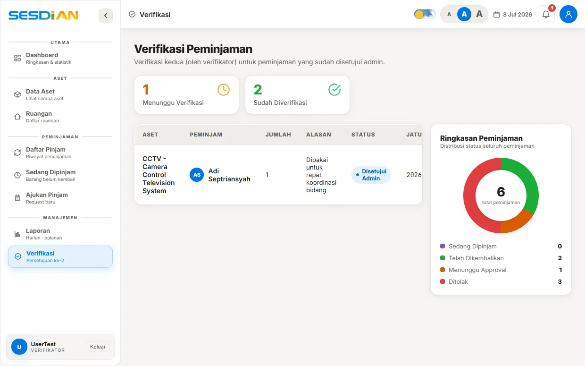
Gambar 12. Halaman Verifikasi beserta ringkasan sebaran status
Di luar tugas pemeriksaan tersebut, akun verifikator tetap dapat memakai seluruh fasilitas yang tersedia bagi pegawai biasa, mulai dari menelusuri barang, mengajukan peminjaman, hingga melihat laporan, sehingga perannya bersifat menambah kewenangan dan bukan menggantikan fungsi keseharian sebagai pengguna.
Bab VI Penggunaan bagi Administrator
Administrator memegang porsi pengelolaan yang paling luas. Halaman berandanya menyerupai milik pegawai, tetapi angka-angka yang ditampilkan mencakup keseluruhan data organisasi, dan tabel peminjaman terbarunya memuat transaksi dari semua pengguna. Beranda administrator diperlihatkan pada Gambar 13.
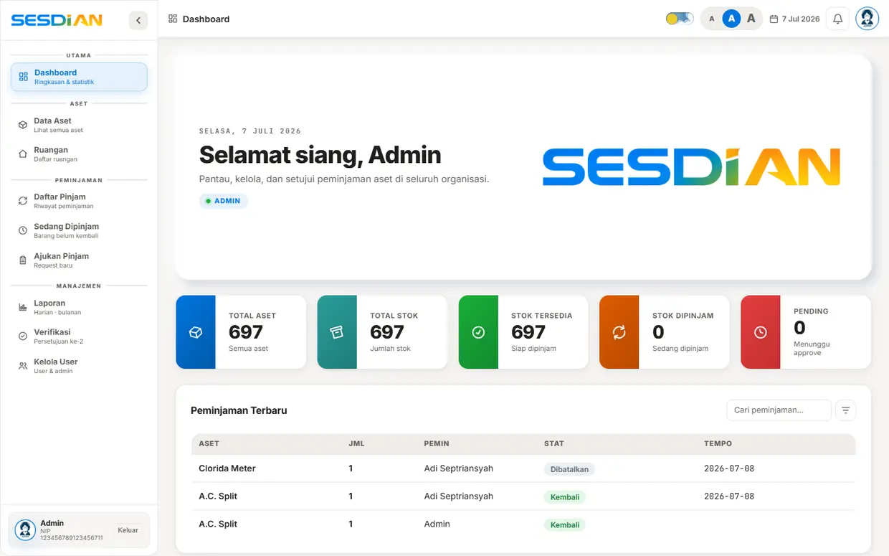
Gambar 13. Halaman beranda administrator
Pengelolaan barang dilakukan melalui menu Data Aset, yang pada tampilan administrator dilengkapi tombol Tambah Aset dan Import Excel di sudut kanan atas seperti terlihat pada Gambar 14. Ketika Tambah Aset dibuka, muncul formulir yang meminta nama barang dengan bantuan saran otomatis dari nama yang sudah ada agar penulisan seragam, kode yang harus unik untuk setiap unit, kategori yang dipilih dari daftar dan dapat ditambah langsung dari daftar itu juga, merek, ruangan, jenis BMN atau Non-BMN, kondisi, status unit, serta foto yang dapat digeser dan diperbesar melalui alat pemotong gambar sebelum disimpan. Formulir penambahan barang ini ditunjukkan pada Gambar 15.
Gambar 14. Halaman Data Aset dengan tombol pengelolaan administrator
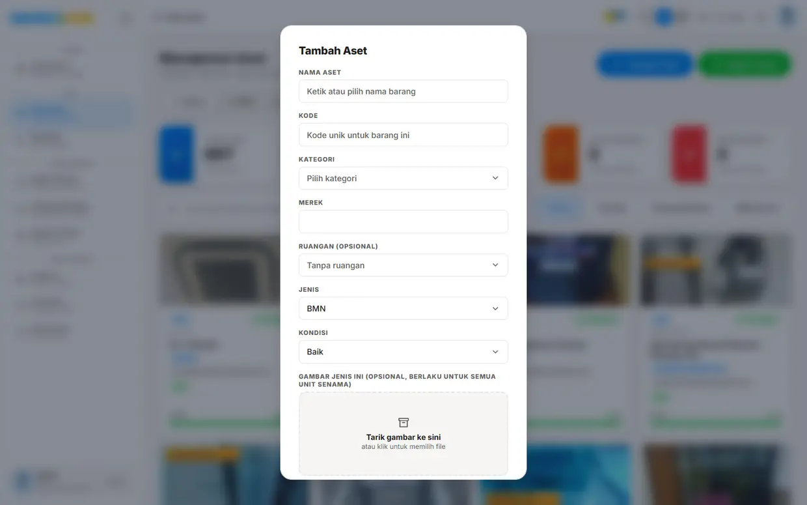
Gambar 15. Formulir penambahan barang baru
Satu hal yang perlu dipahami adalah pengelolaan foto. Semua unit yang bernama dan bermerek sama memakai satu foto bersama, sehingga penggantian gambar melalui tombol Ganti Gambar pada rincian jenis akan berlaku untuk seluruh unit sejenis sekaligus. Untuk barang yang belum memiliki foto, aplikasi menampilkan ilustrasi bawaan. Pada tingkat unit, administrator dapat menyunting datanya melalui tombol berikon pensil, menghapusnya melalui tombol berikon tempat sampah yang selalu disertai konfirmasi, atau mencetak label QR-nya. Ketika daftar barang berjumlah ratusan, pemuatan formulir suntingan tidak lagi menunggu seluruh daftar; formulir tampil segera setelah data kategori dan ruangan siap, sedangkan daftar barang dimuat di latar hanya untuk keperluan saran nama dan pemeriksaan keunikan kode.
Untuk pemasukan data dalam jumlah besar, tersedia fasilitas Import Excel. Administrator terlebih dahulu mengunduh berkas contoh agar susunan kolomnya benar, mengisinya, lalu mengunggahnya kembali; aplikasi memeriksa isi berkas dan melaporkan baris yang bermasalah sebelum data benar-benar disimpan. Jendela pemasukan data ini diperlihatkan pada Gambar 16.
Gambar 16. Jendela pemasukan data barang dari berkas Excel
Penataan tempat dan penggolongan barang ditangani melalui dua menu terpisah. Menu Kategori Aset, yang tampak pada Gambar 17, dipakai untuk menambah golongan barang baru maupun menghapus golongan yang tidak terpakai, dengan catatan barang lama yang memakai golongan tersebut akan menjadi tanpa kategori. Menu Ruangan pada Gambar 18 dipakai untuk mendaftarkan ruangan beserta kode dan penanggung jawabnya, membuka isi ruangan untuk melihat maupun memindahkan barang, dan mencetak kode QR ruangan yang kemudian dapat dipindai publik.
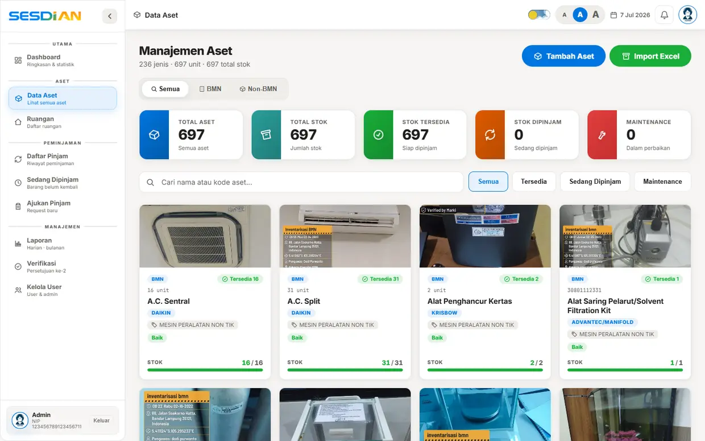
Gambar 17. Halaman pengelolaan kategori barang
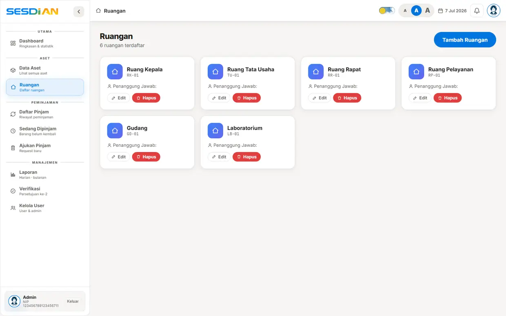
Gambar 18. Halaman pengelolaan ruangan
Alur persetujuan peminjaman menjadi inti pekerjaan administrator sehari-hari. Sebuah pengajuan yang baru masuk berstatus Pending dan tampak di Daftar Pinjam maupun di halaman Verifikasi milik administrator, disertai pemberitahuan lewat lonceng dan WhatsApp. Administrator memeriksa dan memutuskan untuk menyetujui atau menolak, dan setiap keputusan meminta konfirmasi kedua sebelum dijalankan. Pengajuan yang disetujui kemudian menunggu verifikator menandainya Terverifikasi; sesudah itu barang diserahkan dan stok berkurang. Ketika barang dikembalikan, pemohon mengajukan pengembalian lalu petugas menandainya sebagai Kembali sehingga stok pulih. Untuk menjaga agar angka tetap konsisten, sistem menghitung ulang stok secara otomatis berdasarkan peminjaman yang sedang berjalan. Di luar peminjaman, administrator juga dapat menandai unit tertentu berstatus maintenance ketika barang sedang dalam perbaikan sehingga tidak ikut ditawarkan untuk dipinjam.
Pengelolaan akun pengguna dilakukan melalui menu Kelola User yang ditampilkan pada Gambar 19. Sesuai penjelasan pada Bab II, penambahan akun cukup dilakukan dengan mengisi NIP delapan belas angka dan memilih perannya, sementara nama dan kata sandi sengaja tidak dapat diisi administrator. Selama pemilik NIP belum mengaktifkan akunnya, baris akun tersebut ditandai sebagai belum aktif. Dari halaman yang sama administrator dapat mengubah peran seorang pengguna, dengan pengecualian bahwa ia tidak dapat menurunkan peran akunnya sendiri, serta menghapus akun yang sudah tidak memiliki peminjaman berjalan.
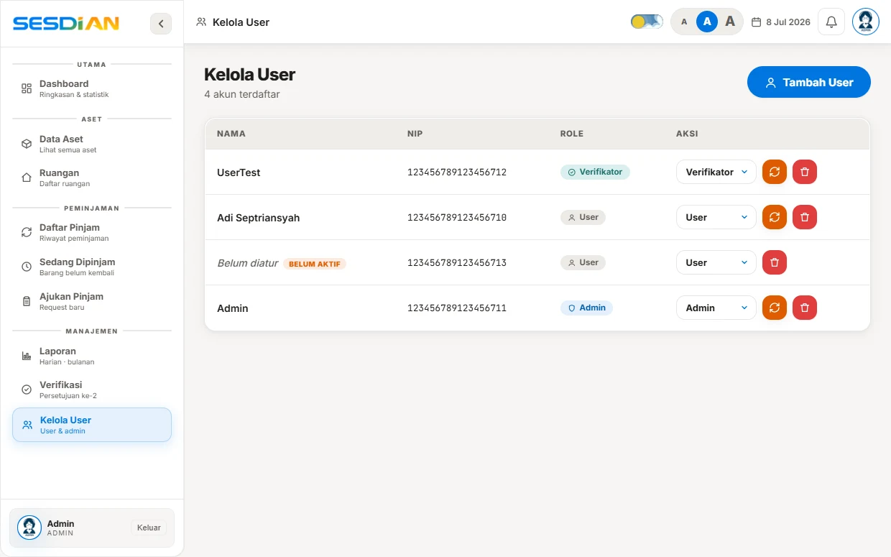
Gambar 19. Halaman pengelolaan pengguna
Bagian terakhir yang menjadi tanggung jawab administrator adalah penyusunan laporan melalui menu Laporan yang diperlihatkan pada Gambar 20. Periode laporan dapat dipilih secara harian dengan menentukan tanggal, atau bulanan dengan menentukan bulan, dan seluruh ringkasan serta tabel menyesuaikan pilihan itu. Tabel laporan memuat nama peminjam, barang, tanggal pinjam, tanggal kembali, tanggal pengembalian, administrator, dan verifikator, disertai penyaring status di atasnya. Rekapitulasi dapat diunduh sebagai berkas Excel melalui tombol Export CSV atau dicetak sebagai berkas PDF berupa lembar Daftar Peminjaman Barang Inventaris yang siap ditandatangani. Di bagian bawah halaman tersedia grafik garis yang menggambarkan jumlah pengajuan pada tiap periode, yang angkanya dapat dibaca dengan mengarahkan tetikus ke titik-titik grafik. Adapun pemberitahuan WhatsApp yang menyertai seluruh alur ini bersandar pada nomor administrator yang diatur di Detail Profil; tanpa layanan pengirim otomatis, aplikasi menyiapkan pesan yang tinggal dikirim satu kali klik, sedangkan bila layanan pengirim otomatis telah diatur, pesan terkirim dengan sendirinya, termasuk kabar keputusan kepada peminjam.
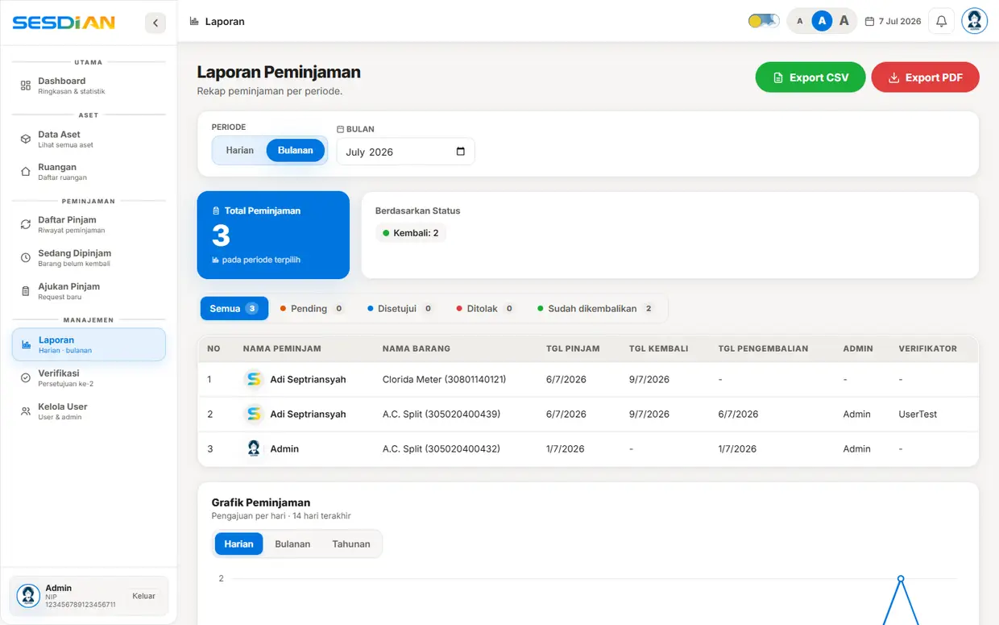
Gambar 20. Halaman Laporan Peminjaman
Bab VII Penutup
Uraian pada bab-bab sebelumnya mengikuti urutan pemakaian yang sebenarnya, dari hal yang terbuka bagi umum, pengaktifan akun oleh pegawai, peminjaman dan pengembalian barang, pemeriksaan berlapis oleh verifikator, hingga pengelolaan menyeluruh oleh administrator. Susunan seperti ini diharapkan memudahkan pembaca menempatkan dirinya sesuai peran yang dipegang dan menemukan langkah yang dibutuhkan tanpa harus membaca seluruh dokumen.
Beberapa kendala yang lazim ditemui sebenarnya dapat diselesaikan dengan langkah sederhana. Halaman yang tidak kunjung menampilkan data biasanya cukup diatasi dengan memeriksa sambungan internet lalu memuat ulang halaman, dan bila tampilan terasa belum berubah setelah ada pembaruan, memuat ulang secara menyeluruh dengan menekan tombol Ctrl, Shift, dan R secara bersamaan umumnya menyegarkan berkas ke versi terbaru. Kegagalan masuk meski kata sandi diyakini benar sering berpangkal pada NIP yang tidak tepat delapan belas angka atau pada akun yang belum melewati proses pengaktifan. Sementara itu, tidak munculnya menu-menu administrator menandakan bahwa peran akun yang bersangkutan memang bukan administrator, sehingga penyesuaian peran perlu diminta kepada administrator yang berwenang.
Dengan pencatatan yang tertata melalui aplikasi ini, pemantauan barang milik negara diharapkan berlangsung lebih tertib, lebih terbuka, dan lebih mudah dipertanggungjawabkan dibanding cara manual yang selama ini dijalankan.